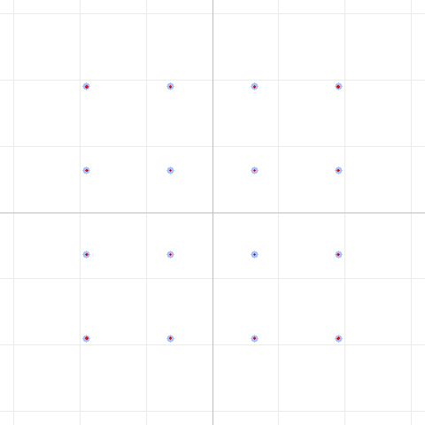

The suggestion
In our first field report we characterized the DART modem over two UV-Pro handhelds and concluded that the link's quality ceiling lives in the audio path, most likely the Bluetooth SBC codec and the radio's audio processing — not in the RF, the band, or the transmit level.
A natural follow-up landed in our inbox: if the codec is the bottleneck, can you raise the SBC bitpool and get a cleaner signal? Great question — and cheap to answer in software before touching any radio.
What "bitpool" is (in 30 seconds)
SBC is the mandatory Bluetooth A2DP audio codec. It splits audio into frequency subbands and quantizes each one. Bitpool is the dial that sets how many bits get spread across those subbands per frame — effectively the quality/bitrate knob. Higher bitpool → finer quantization → less quantization noise (and more Bluetooth bandwidth). Our radios use bitpool 18; for our audio format (32 kHz, mono, 16 blocks, 8 subbands) the valid maximum is 124.
| Bitpool | Approx. Bluetooth bitrate |
|---|---|
| 18 (radio default) | ~88 kbps |
| 40 | ~176 kbps |
| 124 (max) | ~512 kbps |
Every DART frame passes through SBC twice — once app→radio, once radio→app — so if the codec is smearing our constellation, bitpool is the obvious thing to turn up.
The experiment
We used DART's software pipeline to isolate the codec's contribution: encode a 16QAM (Level 5) frame — the mode most sensitive to distortion — push it through the SBC codec at a range of bitpools, then decode and measure Error Vector Magnitude (EVM, lower = tighter constellation). 16QAM is the acid test: it needs precise amplitude and phase, so any quantization noise shows up immediately.
Seeing it: bitpool 18 vs. 124 (SBC only, no channel noise)
Bitpool 18 (the radio default) — EVM 3.5%

All sixteen points resolve, but each is a visibly fuzzy blob — that spread is
pure SBC quantization noise. (The denser bottom-left cluster is just the
zero-padding of a short-ish payload landing on the 0000 symbol, not a channel
effect.)
Bitpool 124 (maximum) — EVM 0.0%

At maximum bitpool the codec is essentially transparent — the received red dots sit exactly on the blue ideal points. So yes: the SBC codec at bitpool 18 really does add noise, and raising bitpool removes it.
Result 1 — bitpool helps, but the benefit saturates fast
Sweeping bitpool on a clean link (light 25 dB noise), the EVM improves and then flattens out:
| Bitpool | ~kbps | EVM |
|---|---|---|
| 18 (default) | ~88 | 3.9% |
| 24 | ~112 | 3.2% |
| 30 | ~136 | 2.5% |
| 40 | ~176 | 2.1% |
| 50 | ~216 | 2.0% |
| 64–124 | 264–512 | 2.0% (floor) |
SBC at bitpool 18 costs us roughly ~3% EVM, and turning it up recovers most of that — but the gains stop mattering by bitpool ~40. Beyond that you're spending Bluetooth bandwidth for no measurable return.
Result 2 — and it's swamped the moment real noise appears
Here's the catch. Repeat the sweep at harsh noise levels near what a real radio link delivers (~8–12 dB SNR), and the bitpool advantage collapses into the noise:
| Channel SNR | EVM @ bitpool 18 | EVM @ bitpool 124 | Difference | Decoded? |
|---|---|---|---|---|
| 12 dB | 9.3% | 8.8% | 0.5% | ✅ |
| 10 dB | 11.4% | 11.0% | 0.4% | ✅ |
| 8 dB | 14.2% | 13.8% | 0.4% | ✅ |
Two takeaways jump out:
- Once channel noise is present, bitpool moves EVM by less than half a percent. The channel noise floor completely swamps the SBC quantization floor. A ~3% improvement is meaningless next to a 14% channel impairment.
- 16QAM decoded all the way down to 8 dB SNR through SBC + noise, at every bitpool. That's below the ~10–11 dB our real link actually delivered — so if additive noise were the whole story, 16QAM should have worked over the air. It didn't.
The verdict
- Yes, SBC bitpool has a real, measurable effect on the signal — at bitpool 18 the codec adds ~3% EVM, and higher bitpool removes it, becoming transparent near the maximum.
- But it is not the lever that unlocks the failed high-order modes. On the
real link the constellation showed
29% EVM; the SBC contribution (2–3%) is a rounding error against that. Bitpool is ~2% of a ~29% problem. - The gains saturate by bitpool ~40, so even in the best case there's no reason to push it to the maximum.
On real hardware: we tested this on the UV-Pro radios. The firmware accepts transmit bitpool up to 40 but rejects the codec maximum (124) — and 40 is exactly where the quality saturates anyway. So HTCommander now sends to the radio at bitpool 40 (up from the default 18). The incoming (radio → app) stream is fixed at bitpool 18 by the radio's firmware and can't be changed, so the return path stays the lower-quality direction.
This actually sharpens our earlier conclusion. Additive noise and SBC quantization — both fully reproducible in simulation — cannot break 16QAM even at 8 dB SNR. Yet the real radio link fails it at a better nominal SNR. The missing ingredient is phase noise / distortion in the FM audio path, an impairment neither the codec setting nor the noise floor explains. That remains the one thing worth attacking: a wired audio connection or a higher-quality codec path that removes the analog audio round-trip entirely.
Practical guidance: if your radio firmware makes a higher bitpool trivial,
setting it to 40 is a harmless, small quality win on clean links — but don't
expect it to rescue 8PSK or 16QAM on a marginal link. The realistic best encoding
on real hardware is still **QPSK R1/2 (2 kbps)**, with BPSK and the 4-FSK
fallback below it.
Reproduce this
The bitpool sweep is built into the DART test tool. To watch the codec's effect on any mode:
# Clean link, sweep quality:
dart run test/dart_modem_test.dart pipeline -m 5 --bitpool 18 -o out.wav --png bp18.png "your message"
dart run test/dart_modem_test.dart pipeline -m 5 --bitpool 124 -o out.wav --png bp124.png "your message"
# Add channel noise to see the bitpool advantage disappear:
dart run test/dart_modem_test.dart pipeline -m 5 --noise 10 --bitpool 18 -o out.wav "your message"
dart run test/dart_modem_test.dart pipeline -m 5 --noise 10 --bitpool 124 -o out.wav "your message"
--bitpool accepts 2–124 (the radio uses 18) and implies --sbc. We'd love to
hear from anyone who can raise the bitpool on their radio firmware and capture
real over-the-air constellations — does removing the SBC quantization floor help
in practice, or does the phase-noise ceiling hold exactly as our simulation
predicts?
Method: DART software pipeline (encode → SBC codec round-trip → optional AWGN → decode), 16QAM R5/6, 32 kHz/mono SBC at 16 blocks / 8 subbands / loudness allocation. Constellation diagrams generated by the DART test tool. Companion to "Pushing Data Through FM Voice Radios: Real-World Findings from the DART Modem."